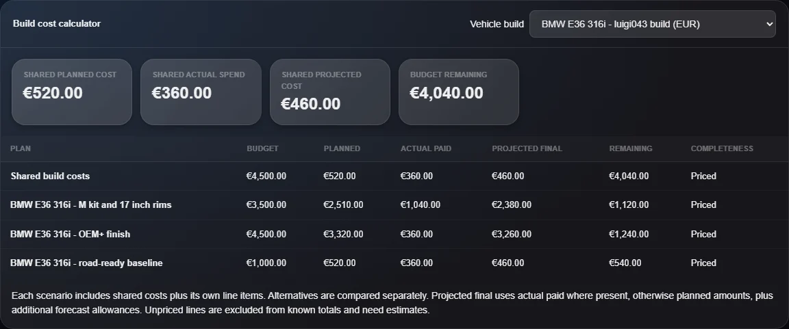

Engineering project · Runtime screenshot
Vehicle Build Cost Calculator
Owner-scoped build budgets with planned, actual and projected costs across independent scenarios.
Local demonstration · Static runtime preview
View GitHub source
Problem
Build estimates need explicit prices, consistent scenario links and a reliable ownership boundary.
Architecture
React communicates with an ASP.NET Core API; EF Core persists owner-scoped records and decimal costs in PostgreSQL.
Engineering decisions
- Scope queries and summaries to the JWT owner, including parent links.
- Keep unknown legacy costs and owners unassigned; never infer money from notes.
- Compare alternatives separately and include shared costs once.
Implemented workflow
- Build and scenario CRUD with linked parts, labor and forecast allowances.
- Server-calculated planned, actual and projected totals; EUR, USD and GBP without conversion.
Verified result
38 backend tests, frontend build, real browser cost edits and PostgreSQL migration/persistence checks passed.
- Verification describes the prepared local checkout on 28–29 October 2026; it is not a production or business outcome claim.
- Prepared improvements have not been pushed; the public repository may differ from this runtime preview.
Scope and next steps
- Full line totals only: no quantity pricing, partial-payment ledger, receipts or currency conversion.
- Production secrets, token lifecycle, deployment migrations and broader accessibility review remain.
Technology
React · TypeScript · ASP.NET Core · EF Core · PostgreSQL · JWT
Preview availability
Static runtime preview. No hosted interactive demo is available. The prepared improvements were verified in a local checkout and have not been pushed to GitHub; public source may differ from these captures. Use the repository documentation for the public version's setup requirements.
← Return to portfolio